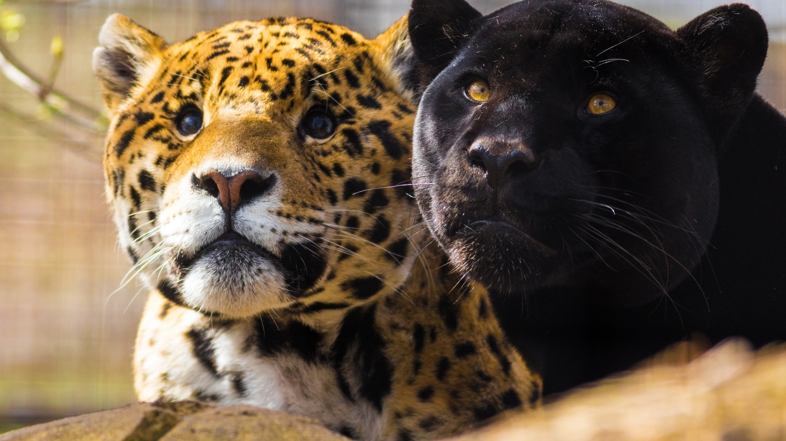

Чёрный цвет шерсти пантер вызван обильным содержанием в ней меланина, который и придаёт шерстинкам насыщенный чёрный оттенок.
Меланизм - это образование пигмента (обычно тёмного цвета) в коже. Следовательно, эта разновидность окраса обычно указывает на то, что кошка чёрная или тёмно-коричневая. Вы можете узнать о различиях между пантерами и ягуарами.
Черные пантеры обладают уникальной способностью изменять свой запах, что позволяет ей обманывать свои жертвы, которые сами идут к ней в лапы, привлеченные запахом, который принимают за запах сородичей.

ПРЕДСТАВЬТЕ СЕБЕ!
Согласно официальным данным, около 90 000 представителей флоры и фауны находятся в зоне риска исчезновения, а еще 600 – максимально приближены к этому.
На сегодняшний день под серьезный удар попали редкие кошки - флоридские пантеры. Животные резко стали погибать по непонятной причине у них отказывают лапы.
Всего полвека назад пум можно было встретить по всей Америке теперь же диких кошек можно найти только на территории штата Флорида. Они пали жертвой сокращения своего ареала обитания люди вырубают леса.
Также на них постоянно охотились. Флоридская пума действительно скоро исчезнет их осталось всего 230 особей. Уже 10 пантер погибло из-за того, что у них резко отказали лапы.